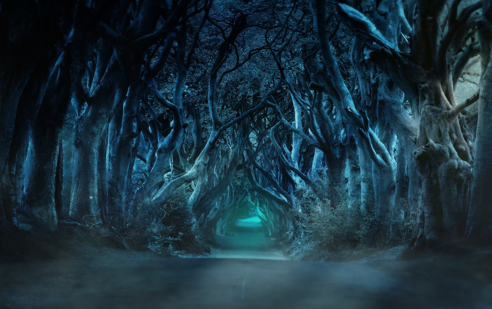

Forget Saint Brendan and Joe Biden, never mind Maureen O'Hara and Barak O'Bama, Éire Dubh looks at obscure figures and events of the Irish diaspora that weren't anything to write home about.
As much as we laud the many successful emigrants, and often attempt to lay claim to those with tenuous connections to our tiny island, not all those who wandered abroad brought craic agus ceol.